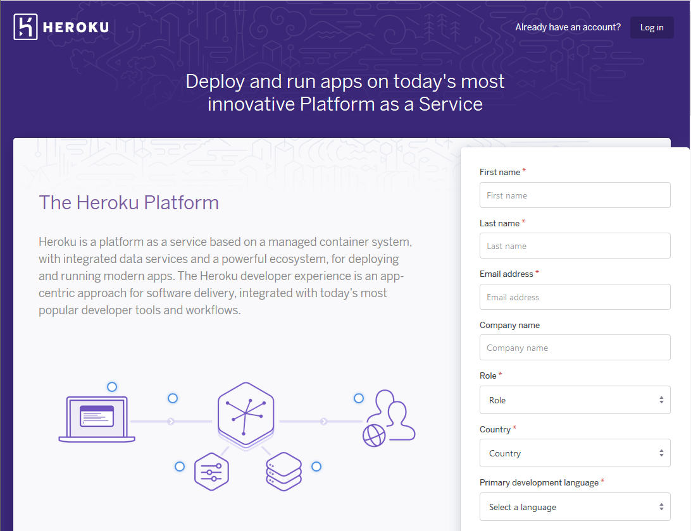

Streamlit is a web app-building framework for Python. Streamlit is a way to create mostly simple single-page web apps that are easy to deploy. Streamlit is useful for engineers and data scientists who have some app functionality, like a plot that dynamically changes based on user interaction, but don't want to build out a full website using a web framework like Django or Flask.
In this post, we will create a Streamlit app that displays a Bokeh plot and deploy it online with Heroku.
- Installing Streamlit
- Running Streamlit for the First Time
- Create a Simple Streamlit App
- Create a Mohr's Circle Streamlit App
- Deploy on Heroku
- Sign up for a Heroku account
- Use Windows Subsystem for Linux (WSL) to install the Heroku CLI
- Pull down the code from GitHub
- Create a virtual environment, install packages and save a requirements.txt file
- Test and make sure the streamlit app runs
- Create a Procfile and a setup.sh file
- Push the project up to Heroku
- View the Streamlit App live on the web
- Summary
A link to the Streamlit docs is below:
Streamlit builds web-apps from a single Python file. Only a couple additional lines of code are needed to turn a Python .py file into a web-app using Streamlit.
Installing Streamlit
Streamlit can be installed with pip, the Python package manager. It's a good idea to install Streamlit into a virtual environment, rather than installing Streamlit into the base or built-in version of Python installed on your machine. I use the Anaconda Prompt to create virtual environments. The commands below are designed to run on the Anaconda Prompt and will create a virtual environment called (streamlit) and install the Streamlit package into that environment. Note that at the time of writing, Streamlit can not be installed with conda, it must be installed with pip.
conda create -y -n streamlit python=3.7
conda activate streamlit
pip install streamlit
You can confirm your installation by opening up the Python REPL and typing the commands below (note the >>> prompt is shown to indicate the Python REPL, not characters for the user to enter).
python
>>> import streamlit
>>> streamlit.__version__
Running Streamlit for the First Time
You can run a demo app that comes with the Streamlit package by running the following command into a terminal. Note the (streamlit) virtual environment (with Streamlit installed into it) must be active for the command to work.
streamlit hello
This command starts a demo Streamlit app. Open a web browser and enter the URL shown in your terminal. The running app will look something like the screenshot below.
If you select the Plotting Demo from the menu on the left-hand side, you'll see an animated line graph of random numbers.
Type [Ctrl]+[c] into the terminal stop the Streamlit server.
Now that we have a feel for some of the things Streamlit can do, let's build a simple Steamlit App.
Create a Simple Streamlit App
Next, let's build our own simple Streamlit app. Our app will ask a user for a number and a name. The app will add 1 to the number and tell the user "Hello" based on their name.
The following code was entered into a file called simple_streamlit_app.py
# simple_streamlit_app.py
"""
A simple streamlit app
run the app by installing streamlit with pip and typing
> streamlit run simple_streamlit_app.py
"""
import streamlit as st
st.title('Simple Streamlit App')
st.text('Type a number in the box below')
n = st.number_input('Number', step=1)
st.write(f'{n} + 1 = {n+1}')
s = st.text_input('Type a name in the box below')
st.write(f'Hello {s}')
After the file is saved, simple_streamlit_app.py can be run as a Streamlit app from the command line (again, make sure you are in the virtual environment where Streamlit is installed):
streamlit run simple_streamlit_app.py
Browse to the URL shown in the terminal. The resulting Streamlit app looks something like the screenshot below.
Type a couple numbers and try out a couple names. Pretty simple right? To shut down the app, type [Ctrl]+[c] into the terminal.
Now that we have created a simple Streamlit app, let's build upon the experience and create a useful app. Our app will build a Mohr's Circle based on user input.
Create a Mohr's Circle Streamlit App
Next, we are going to create a Streamlit App that builds a Mohr's Circle based on user input. A Mohr's Circle is a type of diagram used in Mechanical Engineering to show the internal stresses acting on a region, called a stress element, of a part. When that stress element is rotated relative to the part's direction, the stresses change. A Mohr's circle shows the resulting normal and shear stresses based on the angle the stress element is rotated.
Bokeh

We will build Mohr's Circle using a plotting library called Bokeh. Bokeh is similar to other Python plotting packages like Matplotlib. The difference is that Bokeh is designed to show plots in browsers and on webpages. This functionality is perfect for our Streamlit app that runs in a web browser.
Create the App
Let's create two .py files to build our app. The first file, user_funcs.py contains a couple functions needed to calculate the parameters of Mohr's Circle. The Python code below contains the functions we need.
# user_funcs.py
"""
user-defined functions for the Streamlit mohr's circle app
"""
import numpy as np
def mohr_c(stress_x, stress_y, shear):
"""
input arguments:
stress_x: int or float
stress_y: int or float
shear: int or float
mohr_c() outputs two values for the circle, center, and radius
output:
C, R
C is x-value of the circle center
R is the radius of the circle
"""
C = (stress_x + stress_y) / 2
R = ((((stress_x - stress_y) / 2) ** 2) + shear ** 2) ** 0.5
return C, R
def c_array(C, R, n=100):
"""
input arguments:
C: int or float, the x-value of a circle center
R: int or float, the radius of the circle
n: int, number of points (optional)
c_array() outputs two NumPy arrays of x and y values that creates the circle
output:
x, y
x is a NumPy array with n-values that contains the x-values to build the circle
y is a NumPy array with n-values that contains the y-value to build the circle
"""
t = np.linspace(0, 2 * np.pi, n + 1)
x = R * np.cos(t) + C
y = R * np.sin(t)
return x, y
def X_Y(stress_x, stress_y, shear):
"""build the arrays that describe the line X-Y between the known points"""
X = np.array([stress_x, stress_y])
Y = np.array([-shear, shear])
return X, Y
The second Python file, called streamlit_app_bokeh.py contains the code to build the plot using Bokeh and build the app using Streamlit. Note the last line of code is st.bokeh_chart(p). This line is the "magic sauce" that turns our Bokeh plot into a Streamlit app. The line is a substitute for the command to show a plot in a regular Bokeh application.
# streamlit_app_bokeh.py
"""
A streamlit app to draw a Mohr's Circle based on user input
using the Bokeh plotting library
"""
import numpy as np
import streamlit as st
from bokeh.plotting import figure
from user_funcs import mohr_c, c_array, X_Y
st.title("Mohr's Circle App")
stress_x = st.sidebar.number_input("stress in x", value=2.0, step=0.1)
stress_y = st.sidebar.number_input("stress in y", value=5.0, step=0.1)
shear = st.sidebar.number_input("shear xy", value=4.0, step=0.1)
# find center and radius
C, R = mohr_c(stress_x, stress_y, shear)
# build arrays plot circle
circle_x, circle_y = c_array(C, R)
# build arrays to plot line through the circle
X, Y = X_Y(stress_x, stress_y, shear)
st.sidebar.markdown(f"max stress = {round(C+R,2)}")
st.sidebar.markdown(f"min stress = {round(C-R,2)}")
st.sidebar.markdown(f"max shear = {round(R,2)}")
p = figure(
title="Mohr's Circle",
x_axis_label="stress",
y_axis_label="shear",
match_aspect=True,
tools="pan,reset,save,wheel_zoom",
)
p.line(circle_x, circle_y, color="#1f77b4", line_width=3, line_alpha=0.6)
p.line(X, Y, color="#ff7f0e", line_width=3, line_alpha=0.6)
p.xaxis.fixed_location = 0
p.yaxis.fixed_location = 0
st.bokeh_chart(p)
Install Bokeh and NumPy
Before we can run our Mohr's Circle Streamlit app, we need to install the packages we imported in the two .py files. The packages we need are Bokeh and NumPy. Both of these packages can be installed with conda or pip on the command line. Make sure you are in the (streamlit) virtual environment when you run the install command.
conda install -y bokeh numpy
Run the Streamlit App
Now we can run our Mohr's Circle App locally by typing the command below into the terminal.
streamlit run streamlit_app_bokeh.py
The resulting app will look something like the screenshot below:
Try typing in different numbers for stress in x, stress in y and shear xy. See how the plot changes when different numbers are entered. The app looks great!
Now that the app is running, let's save all the files on GitHub. We'll need the files saved on GitHub for the next couple steps.
Save code on GitHub.com
After I was sure the Streamlit app worked, I saved the code into a git repo and pushed the code up to Github.com. This isn't absolutly necessary, but as you can see below, I needed to use Windows Subsystem for Linux to deploy the Streamlit app. A simple way to bring the code into WSL is to pull the code down from a GitHub repo.
Create a repo on Github, and then use the commands below to commit the code locally and push the code up to GitHub.com. Make sure to change <UserName> to your GitHub username and change <commit message> to your specific commit message.
git init
git remote add origin https://github.com/<UserName>/mohrs_circle.git
git add .
git commit -m "<commit message>"
git push origin master
Our Mohr's Circle Streamlit app runs locally, but if we want to share the app with friends, we need to deploy it over the internet. One way to deploy a Streamlit app is with a web service called Heroku.
Deploy on Heroku

Heroku is a cloud platform for deploying apps on the internet. We can deploy our Steamlit app on Heroku with a couple steps.
Sign up for a Heroku account
First, sign up for a Heroku account. See the link below.

One of the easiest ways to deploy a web-app to Heroku is to use the Heroku CLI (Command Line Interface).
Use Windows Subsystem for Linux (WSL) to install the Heroku CLI
If you are using a Mac or Linux, the Heroku CLI is easy to install using a terminal. However, I had trouble installing and using the Heroku CLI in Windows 10. My work around was installing and using the Heroku CLI in Windows Subsystem for Linux.
If you are using Windows 10, install Windows Subsystem for Linux (WSL) from the Windows Store. I installed the Ubuntu distribution.
Using the start menu, and open the WSL prompt. Type the commands below to update the system and install the Heroku CLI.
sudo apt-get -y update && sudo apt-get -y upgrade
curl https://cli-assets.heroku.com/install.sh | sh
source .bashrc
These commands install the Heroku CLI. You can test the installation with the command below.
heroku --version
If the Heroku CLI is installed, output should look similar to the screen capture below.
Pull down the code from GitHub
Since we saved our code on GitHub.com, we can use git to pull the code down into the WSL environment. Remember to replace <UserName> with your GitHub username.
clone https://github.com/<UserName>/mohrs_circle.git
cd mohrs_circle
Now that we have the code for our app, we need to create the same virtual environment in WSL as we had before when we got our app to run locally.
Create a virtual environment, install packages and save a requirements.txt file
Next, within Windows Subsystem for Linux, create a new virtual environment and install Streamlit, Bokeh and NumPy into it. I have Anaconda installed in my WSL environment, so I used conda to install the Python packages. Alternatively, you could use Python's venv module and pip instead. After the packages are installed, you can use pip to write a requirements.txt file. Heroku needs the requirements.txt file in order for the Streamlit app to work.
conda create -n mohrs_circle python=3.7
conda activate mohrs_circle
python -m pip install streamlit bokeh numpy
pip freeze > requirements.txt
Now we should be able to run the streamlit app from the WSL prompt.
Test and make sure the streamlit app runs
Next, within WSL, let's test and see that the Streamlit app still works. Ensure you are in the virtual environment created above when the command is run.
streamlit run streamlit_app_bokeh.py
You can browse to the URL listed and test the app by typing in a couple different stresses and see how the plot changes.
Create a Procfile and a setup.sh file
Before we can deploy the app on Heroku, a couple more files are required:
- Procfile
- setup.sh
In the Procfile (the file name is Procfile with a capital P and no file extension) add the text:
web: sh setup.sh && streamlit run streamlit_app_bokeh.py
In setup.sh add the text:
mkdir -p ~/.streamlit/
echo "\
[general]\n\
email = \"your-email@domain.com\"\n\
" > ~/.streamlit/credentials.toml
echo "\
[server]\n\
headless = true\n\
enableCORS=false\n\
port = $PORT\n\
" > ~/.streamlit/config.toml
Now the main project directory should have the following files present. The LICENSE and README.md files are optional, but I include these two files in my GitHub repos as a general practice.
mohrs_circle/
├── LICENSE
├── Procfile
├── README.md
├── requirements.txt
├── setup.sh
├── streamlit_app.py
├── streamlit_app_bokeh.py
└── user_funcs.py
Commit all the files and push to GitHub.
git add .
git commit -m "add Procfile, setup.sh, requirements.txt"
git push origin master
Now we are finally ready to deploy on Heroku.
Push the project up to Heroku
Log into Heroku with the Heroku CLI, create the Heroku project and git push to Heroku:
heroku login
heroku create
git push heroku master
# see if it's running
heroku ps:scale web=1
That's it! The Streamlit app should now be running on Heroku.
View the Streamlit App live on the web
Check the URL provided by the Heroku CLI. The app works the same as when we ran it locally, but now it's live on the internet. Anyone with the URL provided by the Heroku CLI can view our Streamlit app.
The Streamlit app opens on a phone too.
Summary
In this post, we created a web app with Streamlit and Bokeh. We ran the Streamlit app locally and then deployed it on the internet using Heroku. Streamlit makes it pretty easy to turn a Python script into a functional web app deployed on the internet.